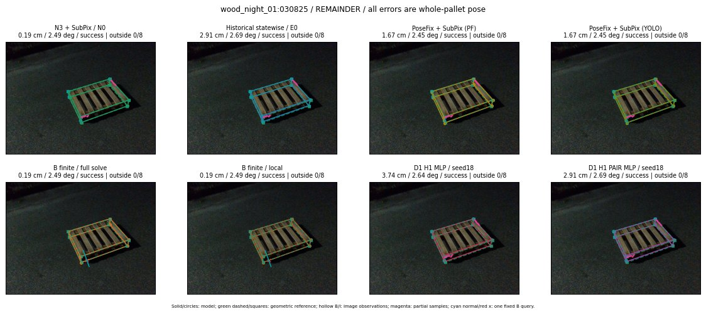

Whole-pallet pose errors; reference is a fixed geometric annotation, not certified physical GT.

Scores are uncalibrated logits. N0 retention is a numerical pose alias; it differs from H0 none or B fallback. B/I and profiles in baseline/B panels are original observations; L panels use new D1 observations. Only one deterministic supported B query is shown in a thumbnail; full support counts are below. Grey privacy rectangles edit the display copy only and are unrelated to O states; all observations were measured on original pixels. Thumbnails use JPEG quality85; detailed scientific panels are PNG.
| Method | Whole pose / cm, deg | Actual source | Selected ID | Score | Archived candidates | Eligible | N0 retained | H0 none | Fallback | Finite profiles |
|---|---|---|---|---|---|---|---|---|---|---|
| Raw YOLO + F | 1.86 cm / 2.90 deg / success | OTHER | None | N/A | N/A | N/A | False | N/A | None | N/A |
| N3 + SubPix / N0 | 0.19 cm / 2.49 deg / success | N0 | None | N/A | N/A | N/A | True | N/A | None | N/A |
| Historical statewise / E0 | 2.91 cm / 2.69 deg / success | E0_REGENERATED | None | N/A | N/A | N/A | False | N/A | False | N/A |
| PoseFix raw | 2.57 cm / 2.41 deg / success | OTHER | None | N/A | N/A | N/A | False | N/A | None | N/A |
| PoseFix + SubPix (PF) | 1.67 cm / 2.45 deg / success | OTHER | None | N/A | N/A | N/A | False | N/A | False | historical support records 9; finite audit N/A |
| PoseFix + SubPix (YOLO) | 1.67 cm / 2.45 deg / success | OTHER | None | N/A | N/A | N/A | False | N/A | False | historical support records 9; finite audit N/A |
| Historical L, seed18 | 0.19 cm / 2.49 deg / success | N0 | N0 | N/A | 60 | 53 | True | True | True | N/A |
| Historical B fixed bank | 3.74 cm / 2.64 deg / success | OTHER | G10/ORIGINAL_WD/sample/0 | N/A | N/A | N/A | False | N/A | False | N/A |
| Historical B full | 1.83 cm / 4.47 deg / success | OTHER | NEW/B/ORIGINAL_WD/h0/LOGGED/G13/ORIGINAL_WD/outline_consider/35/PROPOSED_NATIVE_YAW_0 | N/A | N/A | N/A | False | N/A | False | N/A |
| Historical edge full | 36.00 cm / 15.72 deg / failure | OTHER | NEW/edge/ORIGINAL_WD/h0/LOGGED/G13/ORIGINAL_WD/outline_consider/35/PROPOSED_NATIVE_YAW_0 | N/A | N/A | N/A | False | N/A | False | N/A |
| Historical AB full | 1.82 cm / 4.48 deg / success | OTHER | NEW/AB/ORIGINAL_WD/h0/LOGGED/G13/ORIGINAL_WD/outline_consider/35/PROPOSED_NATIVE_YAW_0 | N/A | N/A | N/A | False | N/A | False | N/A |
| B finite / fixed bank | 0.19 cm / 2.49 deg / success | N0 | N0 | N/A | N/A | N/A | True | N/A | True | N/A |
| B finite / full solve | 0.19 cm / 2.49 deg / success | N0 | N0 | N/A | N/A | N/A | True | N/A | True | N/A |
| B finite / local | 0.19 cm / 2.49 deg / success | N0 | N0 | N/A | N/A | N/A | True | N/A | True | N/A |
| Edge finite / full solve | 0.19 cm / 2.49 deg / success | N0 | N0 | N/A | N/A | N/A | True | N/A | True | N/A |
| D0 H0 MLP / seed18 | 0.19 cm / 2.49 deg / success | N0 | N0 | 3.6881401538848877 | 29 | 22 | True | True | True | N/A |
| D0 H0 MLP / seed19 | 0.19 cm / 2.49 deg / success | N0 | N0 | 4.7146220207214355 | 29 | 22 | True | True | True | N/A |
| D0 H0 MLP / seed20 | 0.19 cm / 2.49 deg / success | N0 | N0 | 1.1403496265411377 | 29 | 22 | True | True | True | N/A |
| D0 H1 MLP / seed18 | 3.74 cm / 2.64 deg / success | OTHER | G10/ORIGINAL_WD/selected | -0.21109086275100708 | 29 | 22 | False | False | False | N/A |
| D0 H1 MLP / seed19 | 2.91 cm / 2.69 deg / success | OTHER | G13/ORIGINAL_WD/endpoint/35 | -1.0855129957199097 | 29 | 22 | False | False | False | N/A |
| D0 H1 MLP / seed20 | 3.74 cm / 2.64 deg / success | OTHER | G10/ORIGINAL_WD/selected | -1.3112456798553467 | 29 | 22 | False | False | False | N/A |
| D1 H0 MLP / seed18 | 0.19 cm / 2.49 deg / success | N0 | N0 | 8.816679000854492 | 29 | 22 | True | True | True | N/A |
| D1 H0 MLP / seed19 | 0.19 cm / 2.49 deg / success | N0 | N0 | 8.300783157348633 | 29 | 22 | True | True | True | N/A |
| D1 H0 MLP / seed20 | 0.19 cm / 2.49 deg / success | N0 | N0 | 7.809166431427002 | 29 | 22 | True | True | True | N/A |
| D1 H1 MLP / seed18 | 3.74 cm / 2.64 deg / success | OTHER | G10/ORIGINAL_WD/selected | 0.12128876149654388 | 29 | 22 | False | False | False | N/A |
| D1 H1 MLP / seed19 | 3.74 cm / 2.64 deg / success | OTHER | G10/ORIGINAL_WD/selected | -0.23891820013523102 | 29 | 22 | False | False | False | N/A |
| D1 H1 MLP / seed20 | 3.74 cm / 2.64 deg / success | OTHER | G10/ORIGINAL_WD/selected | -0.17731744050979614 | 29 | 22 | False | False | False | N/A |
| D1 H1 ROLE AFFINE / seed18 | 3.74 cm / 2.64 deg / success | OTHER | G10/ORIGINAL_WD/selected | 0.14991097152233124 | 29 | 22 | False | False | False | N/A |
| D1 H1 ROLE AFFINE / seed19 | 0.19 cm / 2.49 deg / success | N0 | N0 | 0.0029364489018917084 | 29 | 22 | True | False | False | N/A |
| D1 H1 ROLE AFFINE / seed20 | 3.74 cm / 2.64 deg / success | OTHER | G10/ORIGINAL_WD/selected | 0.08475092053413391 | 29 | 22 | False | False | False | N/A |
| D1 H1 PAIR MLP / seed18 | 2.91 cm / 2.69 deg / success | E0_REGENERATED | E0_REGENERATED | -1.1570408344268799 | 29 | 2 | False | False | False | N/A |
| D1 H1 PAIR MLP / seed19 | 2.91 cm / 2.69 deg / success | E0_REGENERATED | E0_REGENERATED | -1.068933129310608 | 29 | 2 | False | False | False | N/A |
| D1 H1 PAIR MLP / seed20 | 2.91 cm / 2.69 deg / success | E0_REGENERATED | E0_REGENERATED | -0.7474894523620605 | 29 | 2 | False | False | False | N/A |
| D1 H1 PAIR ROLE AFFINE / seed18 | 2.91 cm / 2.69 deg / success | E0_REGENERATED | E0_REGENERATED | -0.5563803911209106 | 29 | 2 | False | False | False | N/A |
| D1 H1 PAIR ROLE AFFINE / seed19 | 2.91 cm / 2.69 deg / success | E0_REGENERATED | E0_REGENERATED | -0.6579526662826538 | 29 | 2 | False | False | False | N/A |
| D1 H1 PAIR ROLE AFFINE / seed20 | 0.19 cm / 2.49 deg / success | N0 | N0 | -0.5162217020988464 | 29 | 2 | True | False | False | N/A |
| Regenerated common E0 | 2.91 cm / 2.69 deg / success | E0_REGENERATED | E0_REGENERATED | N/A | N/A | N/A | False | N/A | False | N/A |